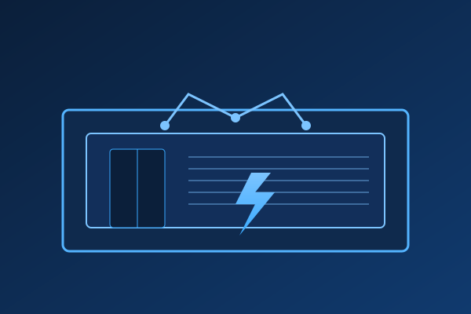

Modularne trafostanice
Za industrijske zone i kriticnu infrastrukturu dizajniramo modularne kontejnere sa segmentima za primar, sekundar i telemetriju. Svaki modul je unapred ispitan i na terenu se samo spaja na mrezu – minimalno zadrzavanje potrosaca, maksimalna kontrola kvaliteta.
- Brza montaza zahvaljujuci plug & play sklopovima.
- Integrisana SCADA priprema i daljinski nadzor.
- Otpornost na poplave i udare munja kroz viseslojnu zastitu.